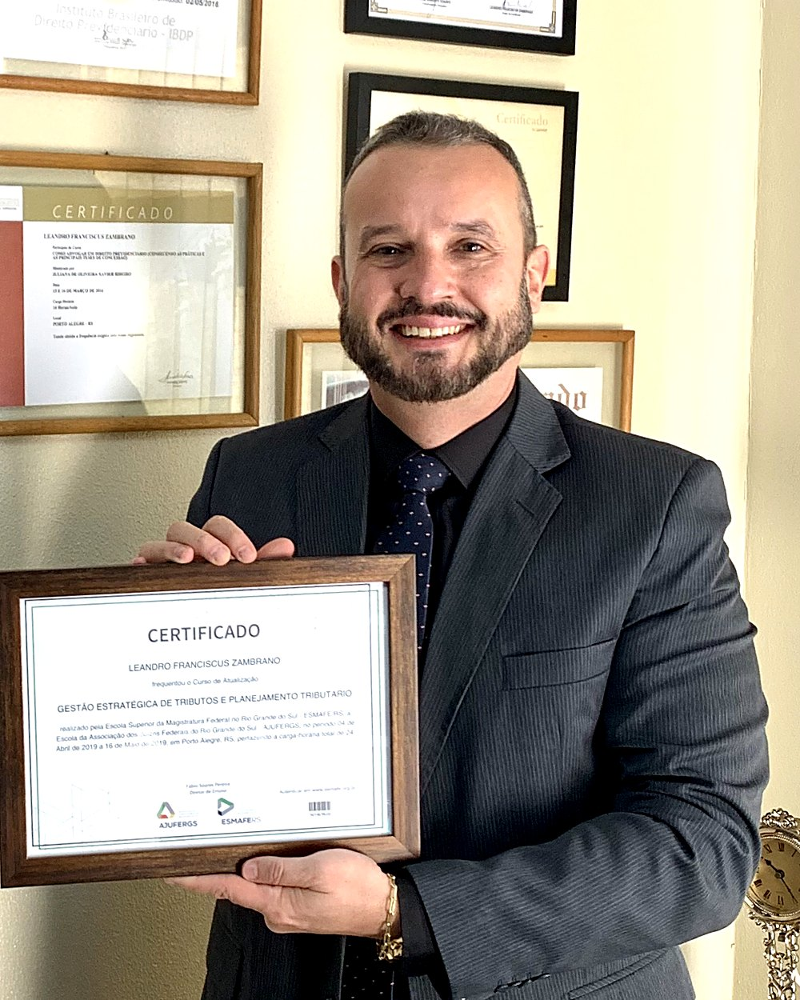
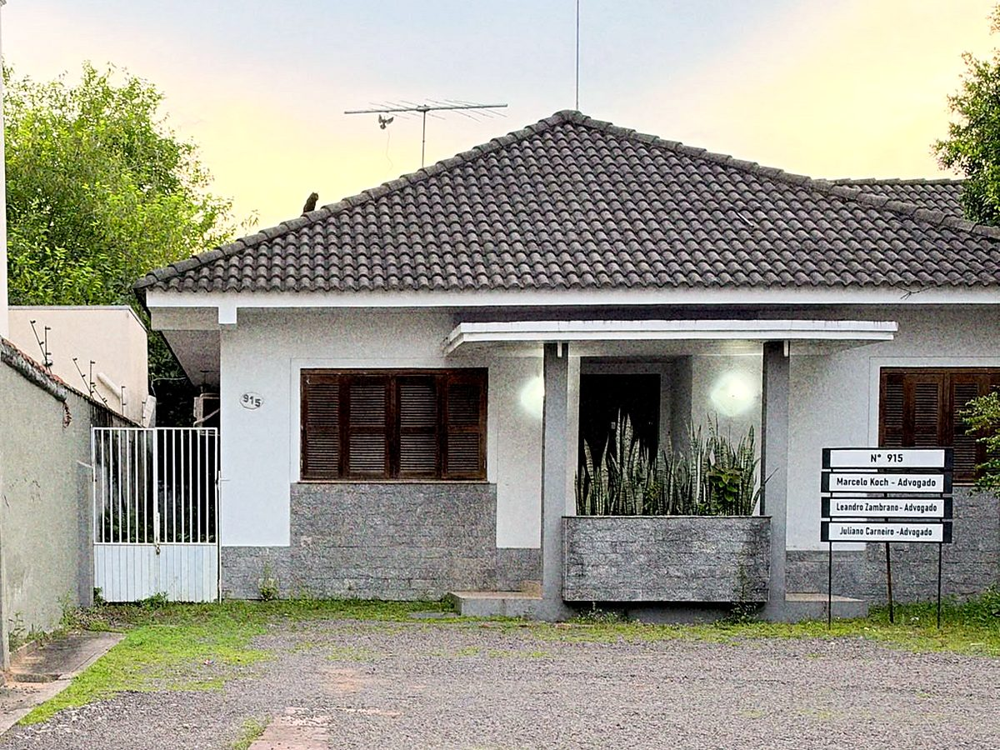

Leandro F. Zambrano
Advogado · OAB/RS 40.534 · São Leopoldo/RS
Atuo em dívidas bancárias, previdência, família e sucessões, imóveis, trabalhista e criminal. Cada etapa do processo é explicada em linguagem simples, para você decidir com informação.

Sobre
Leandro Franciscus Zambrano é bacharel em Ciências Jurídicas e Sociais pela Unisinos, formado em 1996, e advoga há mais de 25 anos em São Leopoldo e no Vale dos Sinos.
É autor do livro O Judiciário sem Juridiquês, escrito para quem precisa entender um processo judicial sem ser do meio. A mesma ideia orienta o atendimento: explicar o que está acontecendo no caso e quais são as opções, sem termos técnicos desnecessários.
Formação
- Especialista em Direito do Trabalho e Processual do TrabalhoPós-graduação lato sensu, Faculdade IDC, 2015
- MBA em Gestão PúblicaPós-graduação lato sensu, Faculdade Iguaçu, 2026
- Bacharel em Ciências Jurídicas e SociaisUnisinos, 1996
Atendimento
- Atendimento presencial em São Leopoldo e on-line, por videoconferência.
- Explicação de cada etapa do processo, sem juridiquês.
- Vídeos informativos por tema, aqui no site e no YouTube.
Áreas de atuação
Atendimento a pessoas e empresas, na via judicial e extrajudicial.
-
Dívidas bancárias
Revisão de contratos, defesa em execuções, ações monitórias, busca e apreensão de veículo e Pronampe.
-
Previdência
Aposentadorias, BPC, auxílio-acidente, pensão por morte e revisões de benefício junto ao INSS.
-
Família e sucessões
Divórcio, guarda, pensão alimentícia, união estável, inventário e partilha.
-
Imóveis
Regularização, usucapião, compra e venda, locação e despejo.
-
Trabalhista
Especialista em Direito do Trabalho e Processual do Trabalho. Reclamatórias e defesas trabalhistas: verbas rescisórias, horas extras, execução e acordos.
-
Criminal
Defesa em todas as fases, do inquérito policial ao tribunal do júri, com atendimento reservado.
Páginas por tema
Conteúdos por tema
Vídeos e carrosséis informativos, organizados por assunto. Cada caso tem as suas particularidades.
Escolha um assunto
Conteúdo de caráter informativo. Não substitui a análise individual do caso.
O Judiciário sem Juridiquês
Como sobreviver a um processo judicial · 2ª edição, revista e atualizada (2026)
Um guia para quem não é da área entender como funciona a Justiça: se existe causa ganha, por que um processo demora, o que é uma liminar, como funciona a guarda compartilhada.
A parte geral trata das regras básicas e da diferença entre ter um direito e exercê-lo. A parte específica cobre inquérito policial, prisão em flagrante, processo criminal, Lei Maria da Penha e tribunal do júri. A 2ª edição foi revista e atualizada e traz capítulos novos sobre o uso do ChatGPT para dúvidas jurídicas, os acordos com o promotor e o superendividamento.
Baixar o livro (PDF)Dúvidas sobre o atendimento
Quais cidades o escritório atende?
A sede fica em São Leopoldo. O escritório atende a região metropolitana de Porto Alegre e o Vale dos Sinos, como Novo Hamburgo, Sapucaia do Sul, Esteio, Campo Bom, Portão e Dois Irmãos, e outras cidades pelo atendimento on-line.
Como é o primeiro atendimento?
É uma conversa inicial, presencial ou por vídeo, com horário marcado pelo WhatsApp. Nela o caso é ouvido e se faz uma primeira análise dos caminhos possíveis.
O atendimento pode ser on-line?
Sim. Quem mora em outra cidade ou não pode se deslocar é atendido por videoconferência, e os documentos podem ser enviados em arquivo.
Que documentos levar?
Documentos pessoais e tudo o que se refere ao caso: contratos, notificações, comprovantes de pagamento, cartas do INSS, citações ou intimações recebidas.
Contato
- WhatsApp (51) 99398-6391
- (51) 99398-6391
- zambrano.celular@yahoo.com
-
Rua Bento Gonçalves, 915, Centro
São Leopoldo/RS · CEP 93010-220 - @advleandrozambrano
Atendimento
Presencial em São Leopoldo ou on-line, por videoconferência, sempre com horário marcado.
Segunda a sexta, das 8h às 18h.
Agendar pelo WhatsAppLocalização
Rua Bento Gonçalves, 915, Centro · São Leopoldo/RS · CEP 93010-220
